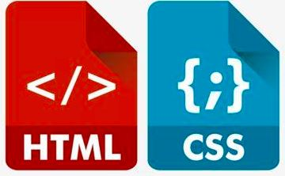
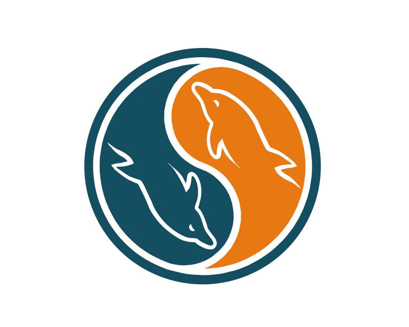

<!DOCTYPE html>
<html>

<head>
    <title>About Me</title>
    <meta name="viewport" content="width=device-width, initial-scale=1">
    <link rel="stylesheet" type="text/css" href="css/superslides.css">
    <link rel="stylesheet" type="text/css" href="css/owl.carousel.min.css">
    <link rel="stylesheet" href="https://stackpath.bootstrapcdn.com/bootstrap/4.1.3/css/bootstrap.min.css" integrity="sha384-MCw98/SFnGE8fJT3GXwEOngsV7Zt27NXFoaoApmYm81iuXoPkFOJwJ8ERdknLPMO" crossorigin="anonymous">
    <link rel="stylesheet" href="https://use.fontawesome.com/releases/v5.6.3/css/all.css" integrity="sha384-UHRtZLI+pbxtHCWp1t77Bi1L4ZtiqrqD80Kn4Z8NTSRyMA2Fd33n5dQ8lWUE00s/" crossorigin="anonymous">
    <link rel="stylesheet" href="https://cdn.jsdelivr.net/gh/fancyapps/fancybox@3.5.6/dist/jquery.fancybox.min.css" />
    <link rel="stylesheet" type="text/css" href="css/style.css">
    <link rel="icon" href="data:;base64,=">
    <script src="https://ajax.googleapis.com/ajax/libs/jquery/3.3.1/jquery.min.js"></script>
    <link rel="shortcut icon" href="#">
    <!--end of previous projects tags-->
    <link rel="stylesheet" href="css/linearicons.css" />
    <link rel="stylesheet" href="css/font-awesome.min.css" />
    <link rel="stylesheet" href="css/bootstrap.css" />
    <link rel="stylesheet" href="css/magnific-popup.css" />
    <link rel="stylesheet" href="css/nice-select.css" />
    <link rel="stylesheet" href="css/animate.min.css" />
    <link rel="stylesheet" href="css/main.css" />

    <script src="js/countUp.js"></script>
    <script src="js/countUp-jquery.js"></script>
    <script src="js/jquery.superslides.min.js"></script>
    <script src="js/jquery.easypiechart.min.js"></script>
    <script src="js/owl.carousel.min.js"></script>
    <script src="js/typed.min.js"></script>
    <script src="https://cdnjs.cloudflare.com/ajax/libs/popper.js/1.12.9/umd/popper.min.js" integrity="sha384-ApNbgh9B+Y1QKtv3Rn7W3mgPxhU9K/ScQsAP7hUibX39j7fakFPskvXusvfa0b4Q" crossorigin="anonymous"></script>
    <script src="https://maxcdn.bootstrapcdn.com/bootstrap/4.0.0/js/bootstrap.min.js" integrity="sha384-JZR6Spejh4U02d8jOt6vLEHfe/JQGiRRSQQxSfFWpi1MquVdAyjUar5+76PVCmYl" crossorigin="anonymous"></script>
    <script type="text/javascript" src="https://unpkg.com/isotope-layout@3.0.5/dist/isotope.pkgd.min.js"></script>
    <script src="https://cdnjs.cloudflare.com/ajax/libs/fancybox/3.2.5/jquery.fancybox.min.js"></script>
    <script src="js/script.js"></script>
    <!--end of first project java links-->
    <script src="js/easing.min.js"></script>
    <script src="js/hoverIntent.js"></script>
    <script src="js/superfish.min.js"></script>
    <script src="js/mn-accordion.js"></script>
    <script src="js/jquery.ajaxchimp.min.js"></script>
    <script src="js/jquery.magnific-popup.min.js"></script>
    <script src="js/jquery.nice-select.min.js"></script>
    <script src="js/isotope.pkgd.min.js"></script>
    <script src="js/jquery.circlechart.js"></script>
    <script src="js/mail-script.js"></script>
    <script src="js/wow.min.js"></script>
    <script src="js/main.js"></script>
</head>

<body>
    <div class="loader">
        <div class="inner"></div>
    </div>
    <nav id="navigation" class="navbar navbar-expand-lg">
        <a class="navbar-brand">
            
        </a>
        <button class="navbar-toggler" type="button" data-toggle="collapse" data-target="#navbarNav" aria-controls="navbarNav" aria-expanded="false" aria-label="Toggle navigation">
            <span class="navbar-toggler-icon"></span>
        </button>

        <div class="collapse navbar-collapse" id="navbarNav">
            <ul class="navbar-nav">
                <li class="nav-item active">
                    <a class="nav-link" href="index.html">Home</a>
                    <li class="nav-item active">
                        <a class="nav-link" href="#about">About Me<span class="sr-only">(current)</span></a>
                    </li>
                    <li class="nav-item active">
                        <a class="nav-link" href="Mayowa Famakinwa\projects.html">Project<span class="sr-only">(current)</span></a>
                    </li>
                    <li class="nav-item active">
                        <a class="nav-link" href="#skills">Tech Experience</a>
                    </li>
                    <li class="nav-item">
                        <a class="nav-link" href="#stats">Skills</a>
                    </li>
                    <li class="nav-item">
                        <a class="nav-link" href="#contact">Contact</a>
                    </li>
            </ul>
        </div>
    </nav>

    <div id="slides">
        <div class="overlay"></div>
        <div class="slides-container">
            
            
            

        </div>

        <div class="titleMessage">
            <div class="heading">
                <p class="main">Mayowa Famakinwa</p>
                </br>
                <p class="sub typed"></p>
            </div>
        </div>
        <nav class="slides-navigation">
            <a href="#" class="next"></a>
            <a href="#" class="prev"></a>
        </nav>
    </div>


    <div id="about" class="section">
        <div class="container">
            <div class="row">
                <div class="col-md-5">
                    
                </div>
                <div class="col-md-7">
                    <br>
                    <h4>My name is Mayowa Famakinwa</h4>
                    <br>
                    <p> I am a Tech Talent Academy’s Data programme graduate, I learned Python fundamentals, including key data science libraries such as NumPy, Pandas and Altair. In addition to this I achieved a solid grounding in relational database management
                        (SQL), data visualisation/business intelligence packages such as PowerBI, Tableau and Solidatas seeking. I’m driven to achieve the best results and bring energy and an upbeat positive attitude in order to meet the challenges of
                        my future role. I am a great team player, a hardworking dedicated and focused individual with a strong passion for Tech.
                    </p>
                    <p> I am certain that my past experiences, has equipped me with the technical skills, problem-solving skills, behavioural skills, organizational skills, communication skills, soft skills and the mindset necessary to be a successful Data
                        Scientist. I am a keen and adaptable worker looking for entry level Data Science positions that will utilise this skillset and join a company where I can continue to grow and apply everything I’ve learned in order to meet and exceed
                        the needs of the company.
                    </p>

                    <!--<a href="" download="CV"> Download CV</a>-->

                </div>
            </div>
        </div>
    </div>
    <!-- Start Service Area -->
    <section class="service-area section-gap">
        <div class="container">
            <div class="row">
                <div class="col-lg-12">
                    <div class="section-title">
                        <h2>Tech Experience</h2>
                        <p>
                            I am able to perform well in a variety of fields, here are some of my strongest skills!
                        </p>
                    </div>
                </div>
            </div>
            <div class="row">
                <div class="col-lg-3 col-md-6">
                    <div class="single-service wow fadeInUp" data-wow-duration="1s">
                        <span class="lnr lnr-database"></span>
                        <h4>
                            <span>DATA</span>
                        </h4>
                        <p>
                            I learned the important of data, programming, professionalism, persistence, and the essential behavioural and growth mindset skills in order to be successful on the job. Worked on a command line interphase and data visualisation project and acquired skills
                            such as Python, ETL, SQL, Database, Amazon Web Service, and Data visualization skills.

                        </p>
                    </div>
                </div>
                <div class="col-lg-3 col-md-6">
                    <div class="single-service wow fadeInUp" data-wow-duration="1s" data-wow-delay="0.2s">
                        <span class="lnr lnr-rocket"></span>
                        <h4><span>AWS</span>CLOUD</h4>
                        <p>
                            AWS is Amazon Web Services. It is a platform that offers flexible, reliable, scalable, easy-to-use and, cost-effective cloud computing solutions.I Learned AWS core services such as Cloud Economics, Global Infrastructure, Elastic Load Balancing, Amazon
                            Cloud Watch, Auto Scaling, Cloud Architecting & Security. • Learned AWS services from an operational viewpoint such as Tooling-and-Automation, Computing-Servers, ScalingandName-Resolution, Containers and Serverless, Networking,
                            Monitoring and Security.

                        </p>
                    </div>
                </div>
                <div class="col-lg-3 col-md-6">
                    <div class="single-service wow fadeInUp" data-wow-duration="1s" data-wow-delay="0.4s">
                        <span class="lnr lnr-laptop"></span>
                        <h4><span>Web</span> Developement</h4>
                        <p>
                            I'm always ready to make a responsive and creative website that fits the need of any client. Using my problem solving and logical reasoning in order to develop an idea is enjoyable!
                        </p>
                    </div>
                </div>
                <div class="col-lg-3 col-md-6">
                    <div class="single-service wow fadeInUp" data-wow-duration="1s" data-wow-delay="0.6s">
                        <span class="lnr lnr-user"></span>
                        <h4><span>UI</span> Design</h4>
                        <p>
                            I'm a beginner in UI Design, I love the process of creating the look and feel of an application’s user interface. The user interface (UI) encompasses both the appearance and interactivity of an app. The colors users see, text they read, buttons they click
                            on, and animations they interact with are all part of the app’s UI and therefore the responsibilities of a UI designer.
                        </p>
                    </div>
                </div>
            </div>
        </div>
        <div id="stats" class="statsSection section">
            <div class="container">
                <div class="row">
                    <div class="col-md-3 col-sm-6">
                        <div class="squareItem">
                            <div class="squareInnerContainer">
                                <div class="squareIcon">
                                    
                                </div>
                                <div class="squareContent">
                                    <h2 class="counter">60%</h2>
                                    <h3>PYTHON</h3>

                                </div>
                            </div>
                        </div>
                    </div>
                    <div class="col-md-3 col-sm-6">
                        <div class="squareItem">
                            <div class="squareInnerContainer">
                                <div class="squareIcon">
                                    
                                </div>
                                <div class="squareContent">
                                    <h2 class="counter">90%</h2>
                                    <h3>HTML & CSS</h3>
                                </div>
                            </div>
                        </div>
                    </div>
                    <div class="col-md-3 col-sm-6">
                        <div class="squareItem">
                            <div class="squareInnerContainer">
                                <div class="squareIcon">
                                    
                                </div>
                                <div class="squareContent">
                                    <h2 class="counter">50%</h2>
                                    <h3>JAVASCRIPT</h3>
                                </div>
                            </div>
                        </div>
                    </div>
                    <div class="col-md-3 col-sm-6">
                        <div class="squareItem">
                            <div class="squareInnerContainer">
                                <div class="squareIcon">
                                    
                                </div>
                                <div class="squareContent">
                                    <h2 class="counter">65%</h2>
                                    <h3>MYSQL</h3>
                                </div>
                            </div>
                        </div>
                    </div>
                </div>
            </div>
        </div>

        <div id="contact" class="contactSection section">
            <div class="col-md-12 text-center">
                
                <p class="subHeading">Like what you see?</p>
                <h2>I'd love to hear from you!</h2>
                <p><a href="mailto:mayo4tech@gmail.com" class="contactButton">GET IN TOUCH!</a></p>

                <div id="back-top">
                    <a href="https://github.com/Medscoding"><i class="fa fa-github"></i></a>
                    <a href="https://www.linkedin.com/in/motun-j-b2b990129/"><i class="fa fa-linkedin"></i></a></br>
                    <a title="Go to Top" href="#">
                        <i class="lnr lnr-arrow-up"></i>
                    </a>
                </div>
            </div>
        </div>
    </section>
    <div class="copyrightSection">
        <div class="col-md-12 text-center">
            <p>&copy; Copyright Mayowa Famakinwa 2021</p>
        </div>
    </div>

</body>

</html>